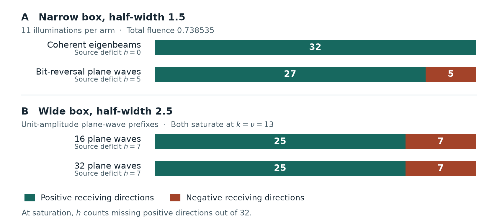
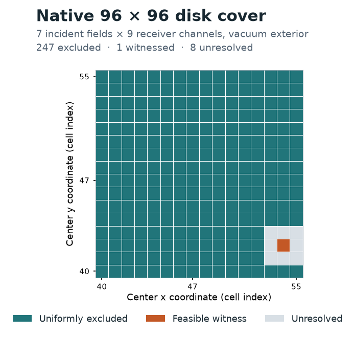
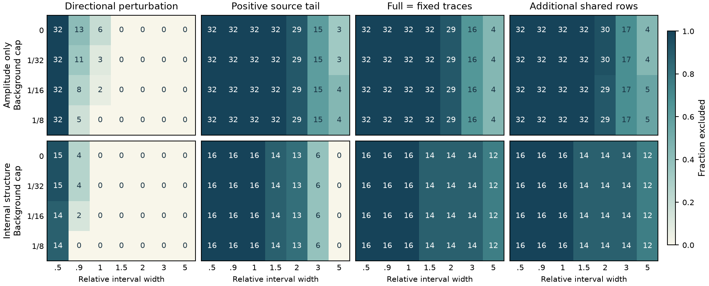

同样发 11 束波，发射方式改变了能预测什么
在 400 MHz、96×96 格的强散射实心材料上，用同一组发射端口、相同总入射能量和相同噪声上限发射 11 束。逐个选取普通角度，32 个接收方向中还有五个无法由这套物理界限制。用理论算出的相干组合发射，32 个方向全部得到有界预测。把允许的材料范围放宽以后，即使发满 32 束，仍有七个方向缺少约束。两个实验都有能解释真实模拟读数的盒内材料。

左图两种照明的总入射能量均为 0.738535。右图更换材料盒，考察增加普通照明数量的效果。点击图可打开矢量原图。
这是对指定材料类预测新散射响应的严格差异。它尚未证明能恢复一张更准的图，或能在暗室里节省相同数量的曝光。
能排除核心位置，仍可能看不清一个像素
物理先验给出一个半径至少两格的核心和半径三格的外层，外部已知为真空。在 9216 维模型的 256 个候选中心中，七发九收的读数排除了 247 个。一个有实际全波见证，另外八个未决。没有用反演图来选搜索起点。

地图颜色对应由数据排除、找到一种相容材料、尚未判定。未决位置不能直接算作检出。
把外部背景上限放宽到 1/32，三个 12² 物体分别排除 55/64、22/32、43/64 个核心位置。再把问题换成“其他材料完全自由，此处能否有一个高像素”，432 项没有一个被排除。三种空间查询 · 100 与 1000 个盒的实测成本
24 对材料的盲测
16 对的实际非零支撑完全相同，仅改变幅度；另外八对在同一允许区改变内部结构。48 份基础材料产生 192 份配对带噪观测。所有 1464 个确实包含生成材料的测试盒均被保留。32 个不包含生成材料的对方盒还找到了另一种相容材料。
普通全维测试与固定迹降维逐盒一致。少数行额外取得的八项排除都来自已知真空。对真正未知行，本批没有看到增益。在额外 32 个结构盒上，冷启动凸优化与惯性方法均排除 14 项，18 项有见证。

每格数字是严格排除数，颜色是占符合该项评分条件的竞争盒比例。相图中的正定对照搜索同一批 72 组公共权重并取完整正源谱。
发射前的把握与实际测量数
六个有限孔径目标各有两类解释能通过旧数据。在较困难的固定总能量双束条件下，条件设计能在发射前对 6/6 个目标保证分开，均匀补角和 Fisher 设计均为 5/6，随机为 3/6。实际打出第一束后，四种策略都是 6/6。实验支持事前判断充分性，尚未显示普遍节省曝光。
两个独立微波暗室提供了实测边界。Manitoba 尼龙柱在 3 GHz 时只剩相当于读数范数 4.018% 的加载误差余量。要把结论用于实物，还需要装入目标之后的独立误差上界。